Heirloom Asian Food Pack¶
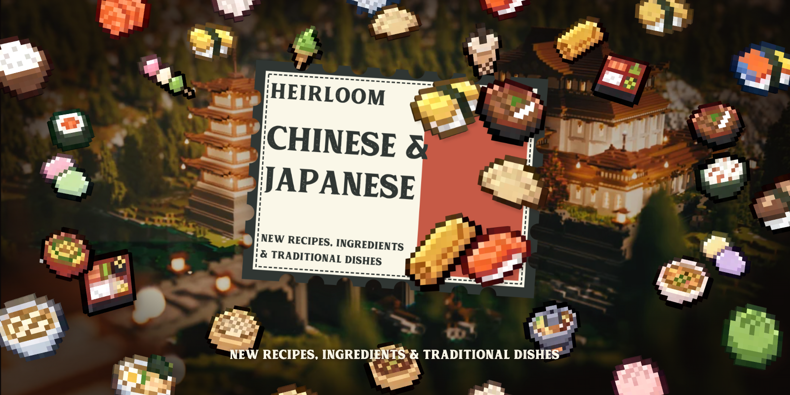
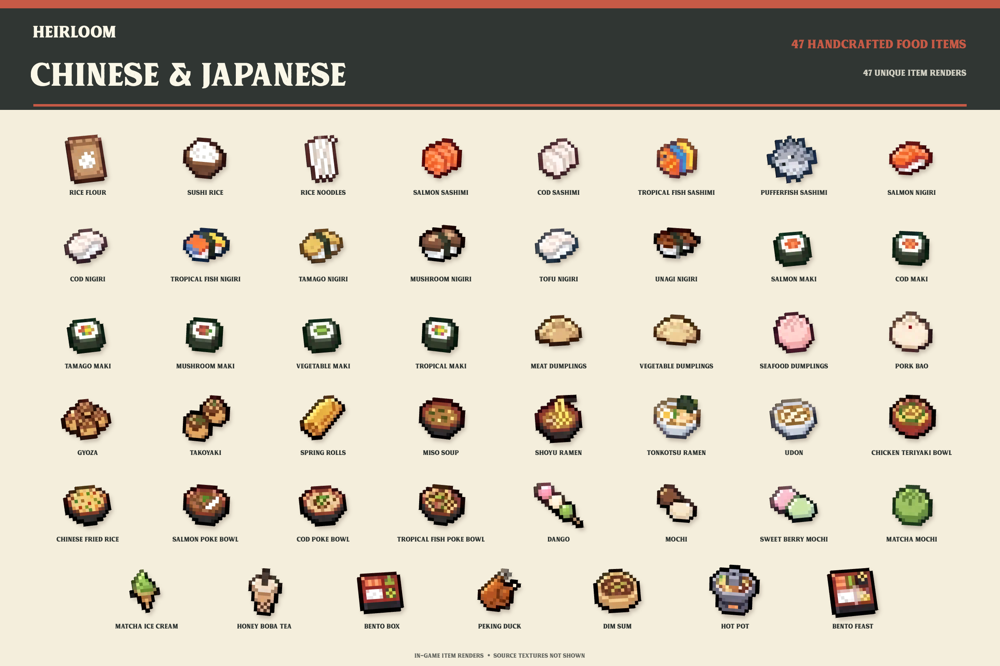
Heirloom Asian Food Pack 1.0.0 contains 47 custom items and 29 recipe entries. The PNG sprites can be used as a visual pack without Heirloom. Heirloom 2.9+ adds the cooking stations, recipe matching, food behavior, dynamic variants, and placeable feasts.
| Field | Value |
|---|---|
| Pack ID | heirloom_asian_food |
| Version | 1.0.0 |
| Recipe override strength | 100 |
| Items | 47 |
| Recipe entries | 29 |
| PNG sprites | 47 |
| Bundled provider configuration | Nexo, ItemsAdder, CraftEngine |
Installation And Visual Providers¶
Copy the files from content/ into Heirloom's content-pack location, install the folder matching your visual provider, then run /hl reload. The pack always retains player-head fallbacks.
The release includes 47 raw PNG sprites and ready-to-install configuration for Nexo, ItemsAdder, CraftEngine. Install only the provider used by your server.
Items¶
| Icon | Item ID | Name | Behavior |
|---|---|---|---|
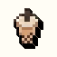 |
ASIAN_BOBA_TEA |
Honey Boba Tea | 6 hunger / 4 saturation; drink; returns glass bottle |
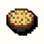 |
ASIAN_CHINESE_FRIED_RICE |
Chinese Fried Rice | 8 hunger / 6 saturation; eat; returns bowl |
ASIAN_DANGO |
Dango | 4 hunger / 2 saturation; eat | |
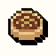 |
ASIAN_DIM_SUM |
Dim Sum | 16 hunger / 12 saturation; eat; 4 placeable servings; feast |
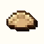 |
ASIAN_DUMPLING_MEAT |
Meat Dumplings | 6 hunger / 4 saturation; eat |
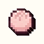 |
ASIAN_DUMPLING_SEAFOOD |
Seafood Dumplings | 6 hunger / 4 saturation; eat |
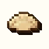 |
ASIAN_DUMPLING_VEGETABLE |
Vegetable Dumplings | 6 hunger / 4 saturation; eat |
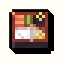 |
ASIAN_FEAST_BENTO |
Bento Feast | 16 hunger / 12 saturation; eat; 4 placeable servings; feast |
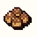 |
ASIAN_GYOZA |
Gyoza | 6 hunger / 4 saturation; eat |
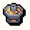 |
ASIAN_HOT_POT |
Hot Pot | 20 hunger / 16 saturation; eat; 5 placeable servings; feast |
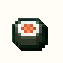 |
ASIAN_MAKI_COD |
Cod Maki | 4 hunger / 2 saturation; eat |
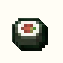 |
ASIAN_MAKI_MUSHROOM |
Mushroom Maki | 4 hunger / 2 saturation; eat |
ASIAN_MAKI_RAINBOW |
Tropical Maki | 4 hunger / 2 saturation; eat | |
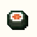 |
ASIAN_MAKI_SALMON |
Salmon Maki | 4 hunger / 2 saturation; eat |
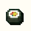 |
ASIAN_MAKI_TAMAGO |
Tamago Maki | 4 hunger / 2 saturation; eat |
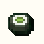 |
ASIAN_MAKI_VEGETABLE |
Vegetable Maki | 4 hunger / 2 saturation; eat |
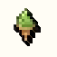 |
ASIAN_MATCHA_ICE_CREAM |
Matcha Ice Cream | 6 hunger / 4 saturation; eat |
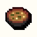 |
ASIAN_MISO_SOUP |
Miso Soup | 8 hunger / 6 saturation; drink; returns bowl |
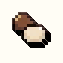 |
ASIAN_MOCHI |
Mochi | 4 hunger / 2 saturation; eat |
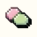 |
ASIAN_MOCHI_BERRY |
Sweet Berry Mochi | 4 hunger / 2 saturation; eat |
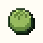 |
ASIAN_MOCHI_MATCHA |
Matcha Mochi | 4 hunger / 2 saturation; eat |
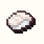 |
ASIAN_NIGIRI_COD |
Cod Nigiri | 6 hunger / 4 saturation; eat |
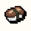 |
ASIAN_NIGIRI_MUSHROOM |
Mushroom Nigiri | 6 hunger / 4 saturation; eat |
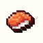 |
ASIAN_NIGIRI_SALMON |
Salmon Nigiri | 6 hunger / 4 saturation; eat |
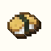 |
ASIAN_NIGIRI_TAMAGO |
Tamago Nigiri | 6 hunger / 4 saturation; eat |
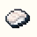 |
ASIAN_NIGIRI_TOFU |
Tofu Nigiri | 6 hunger / 4 saturation; eat |
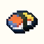 |
ASIAN_NIGIRI_TROPICAL |
Tropical Fish Nigiri | 6 hunger / 4 saturation; eat |
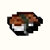 |
ASIAN_NIGIRI_UNAGI |
Unagi Nigiri | 6 hunger / 4 saturation; eat |
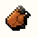 |
ASIAN_PEKING_DUCK |
Peking Duck | 16 hunger / 12 saturation; eat; 4 placeable servings; feast |
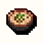 |
ASIAN_POKE_BOWL_COD |
Cod Poke Bowl | 10 hunger / 8 saturation; eat; returns bowl |
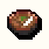 |
ASIAN_POKE_BOWL_SALMON |
Salmon Poke Bowl | 10 hunger / 8 saturation; eat; returns bowl |
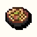 |
ASIAN_POKE_BOWL_TROPICAL |
Tropical Fish Poke Bowl | 10 hunger / 8 saturation; eat; returns bowl |
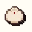 |
ASIAN_PORK_BAO |
Pork Bao | 6 hunger / 4 saturation; eat |
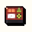 |
ASIAN_PORTABLE_BENTO |
Bento Box | 12 hunger / 10 saturation; eat; effects: Speed, Absorption |
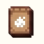 |
ASIAN_RICE_FLOUR |
Rice Flour | ingredient |
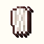 |
ASIAN_RICE_NOODLES |
Rice Noodles | ingredient |
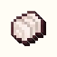 |
ASIAN_SASHIMI_COD |
Cod Sashimi | 4 hunger / 2 saturation; eat |
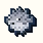 |
ASIAN_SASHIMI_PUFFERFISH |
Pufferfish Sashimi | 4 hunger / 2 saturation; eat; effects: Luck, Poison, Nausea |
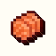 |
ASIAN_SASHIMI_SALMON |
Salmon Sashimi | 4 hunger / 2 saturation; eat |
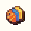 |
ASIAN_SASHIMI_TROPICAL |
Tropical Fish Sashimi | 4 hunger / 2 saturation; eat |
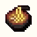 |
ASIAN_SHOYU_RAMEN |
Shoyu Ramen | 10 hunger / 8 saturation; eat; returns bowl |
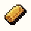 |
ASIAN_SPRING_ROLL |
Spring Rolls | 6 hunger / 4 saturation; eat |
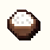 |
ASIAN_SUSHI_RICE |
Sushi Rice | ingredient |
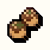 |
ASIAN_TAKOYAKI |
Takoyaki | 6 hunger / 4 saturation; eat |
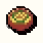 |
ASIAN_TERIYAKI_BOWL |
Chicken Teriyaki Bowl | 10 hunger / 8 saturation; eat; returns bowl |
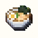 |
ASIAN_TONKOTSU_RAMEN |
Tonkotsu Ramen | 10 hunger / 8 saturation; eat; returns bowl |
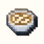 |
ASIAN_UDON |
Udon | 10 hunger / 8 saturation; eat; returns bowl |
Recipes¶
Boiling Pot¶
| Recipe | Output | Inputs | Ingredient rules | Time |
|---|---|---|---|---|
ASIAN_DANGO |
ASIAN_DANGO |  |
required: 1 x ASIAN_RICE_FLOURrequired: 1 x SUGAR |
80 ticks |
ASIAN_DIM_SUM |
ASIAN_DIM_SUM | 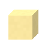 1-2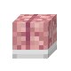  |
required: 1-2 x DOUGHrequired: 1 x MINCED_MEATrequired: 1 x PLANT_PROTEIN |
180 ticks |
ASIAN_DUMPLINGS |
ASIAN_DUMPLING_MEATDefault Meat DumplingsVegetable DumplingsSeafood Dumplings | oror |
required: 1 x DOUGHrequired: 1 x MINCED_MEAT or PLANT_PROTEIN or COD |
120 ticks |
ASIAN_HOT_POT |
ASIAN_HOT_POT |   oror oror  or or |
required: 1 x BOWLrequired: 1 x BEEF or PORKCHOPrequired: 1 x COD or SALMONrequired: 1 x CARROT or BROWN_MUSHROOM |
220 ticks |
ASIAN_MISO_SOUP |
ASIAN_MISO_SOUP | |
required: 1 x BOWLrequired: 1 x PLANT_PROTEINrequired: 1 x DRIED_KELP |
100 ticks |
ASIAN_PORK_BAO |
ASIAN_PORK_BAO | required: 1 x DOUGHrequired: 1 x PORKCHOP |
120 ticks | |
ASIAN_SHOYU_RAMEN |
ASIAN_SHOYU_RAMEN |  0-1 0-1 |
required: 1 x BOWLrequired: 1 x ASIAN_RICE_NOODLES or DRY_PASTArequired: 1 x COOKED_CHICKENoptional: 0-1 x FRIED_EGG |
140 ticks |
ASIAN_SUSHI_RICE |
ASIAN_SUSHI_RICE | 1-2 0-1 0-1 |
required: 1-2 x RICErequired: 1 x WATER_BOTTLEoptional: 0-1 x VINEGAR |
100 ticks |
ASIAN_TONKOTSU_RAMEN |
ASIAN_TONKOTSU_RAMEN | 0-1 |
required: 1 x BOWLrequired: 1 x ASIAN_RICE_NOODLES or DRY_PASTArequired: 1 x COOKED_PORKCHOPoptional: 0-1 x FRIED_EGG |
160 ticks |
ASIAN_UDON |
ASIAN_UDON | 0-1 |
required: 1 x BOWLrequired: 1 x ASIAN_RICE_NOODLES or DRY_PASTAoptional: 0-1 x BROWN_MUSHROOM |
140 ticks |
Cutting Board¶
| Recipe | Output | Inputs | Ingredient rules | Time |
|---|---|---|---|---|
ASIAN_FEAST_BENTO |
ASIAN_FEAST_BENTO | 20-1 |
required: 2 x ASIAN_SUSHI_RICErequired: 1 x SUSHIrequired: 1 x COOKED_CHICKENoptional: 0-1 x CARROT |
0 ticks |
ASIAN_MAKI |
ASIAN_MAKI_SALMONDefault Salmon MakiVegetable MakiTropical Maki | orororororor |
required: 1 x SALMON or COD or TROPICAL_FISH or FRIED_EGG or BROWN_MUSHROOM or CARROTrequired: 1 x ASIAN_SUSHI_RICE or COOKED_RICErequired: 1 x DRIED_KELP |
0 ticks |
ASIAN_PUFFERFISH_SASHIMI |
ASIAN_SASHIMI_PUFFERFISH |  |
required: 1 x PUFFERFISH |
0 ticks |
ASIAN_SASHIMI |
ASIAN_SASHIMI_SALMONDefault Salmon SashimiCod SashimiTropical Fish Sashimi | oror |
required: 1 x SALMON or COD or TROPICAL_FISH |
0 ticks |
DRY_PASTA |
DRY_PASTADefault Dry PastaRice Noodles | required: 1 x DOUGH |
0 ticks | |
SUSHI |
SUSHIDefault Salmon NigiriCod NigiriTropical Fish NigiriTamago NigiriMushroom NigiriUnagi Nigiri | ororororororor |
required: 1 x SALMON or COD or TROPICAL_FISH or FRIED_EGG or BROWN_MUSHROOM or PLANT_PROTEIN or COOKED_CODrequired: 1 x ASIAN_SUSHI_RICE or COOKED_RICE |
0 ticks |
Frying Pan¶
| Recipe | Output | Inputs | Ingredient rules | Time |
|---|---|---|---|---|
ASIAN_GYOZA |
ASIAN_GYOZA | required: 1 x ASIAN_DUMPLING_MEAT or ASIAN_DUMPLING_VEGETABLE or ASIAN_DUMPLING_SEAFOOD |
100 ticks | |
ASIAN_SPRING_ROLL |
ASIAN_SPRING_ROLL | or |
required: 1 x DOUGHrequired: 1 x CARROT or PLANT_PROTEIN |
90 ticks |
ASIAN_TAKOYAKI |
ASIAN_TAKOYAKI | |
required: 1 x CODrequired: 1 x DOUGH |
100 ticks |
ASIAN_TERIYAKI_BOWL |
ASIAN_TERIYAKI_BOWL |  |
required: 1 x BOWLrequired: 1 x COOKED_RICErequired: 1 x COOKED_CHICKENrequired: 1 x HONEY_BOTTLE |
120 ticks |
FRIED_RICE |
FRIED_RICE | 0-1 0-10-10-1 0-10-10-1 |
required: 1 x BOWLrequired: 1 x COOKED_RICErequired: 1 x EGG or BLUE_EGG or BROWN_EGGoptional: 0-1 x CARROToptional: 0-1 x CORNoptional: 0-1 x BACONoptional: 0-1 x ONION |
100 ticks |
Mixing Bowl¶
| Recipe | Output | Inputs | Ingredient rules | Time |
|---|---|---|---|---|
ASIAN_BOBA_TEA |
ASIAN_BOBA_TEA |  |
required: 1 x MILK_BUCKETrequired: 1 x HONEY_BOTTLErequired: 1 x ASIAN_RICE_FLOUR |
0 ticks |
ASIAN_MATCHA_ICE_CREAM |
ASIAN_MATCHA_ICE_CREAM |  |
required: 1 x ICE_CREAMrequired: 1 x GREEN_DYE |
0 ticks |
ASIAN_MOCHI |
ASIAN_MOCHI |  or0-1 or0-1 |
required: 1 x ASIAN_RICE_FLOURrequired: 1 x SUGARrequired: 1 x WATER_BOTTLEoptional: 0-1 x SWEET_BERRIES or GREEN_DYE |
0 ticks |
ASIAN_POKE_BOWL |
ASIAN_POKE_BOWL_SALMONDefault Salmon Poke BowlCod Poke Bowl | ororor0-10-1 |
required: 1 x BOWLrequired: 1 x ASIAN_SUSHI_RICE or COOKED_RICErequired: 1 x SALMON or COD or TROPICAL_FISHoptional: 0-1 x CARROToptional: 0-1 x DRIED_KELP |
0 ticks |
ASIAN_PORTABLE_BENTO |
ASIAN_PORTABLE_BENTO | |
required: 1 x ASIAN_SUSHI_RICErequired: 1 x SUSHIrequired: 1 x COOKED_CHICKENrequired: 1 x CARROT |
0 ticks |
ASIAN_RICE_FLOUR |
ASIAN_RICE_FLOUR | 1-2 | required: 1-2 x RICE |
0 ticks |
DOUGH |
 DOUGH DOUGH |
 oror0-10-10-10-10-1 oror0-10-10-10-10-1 |
required: 1 x BAG_OF_FLOUR or CORNMEAL or ASIAN_RICE_FLOURrequired: 1 x WATER_BOTTLEoptional: 0-1 x EGG or BLUE_EGG or BROWN_EGGoptional: 0-1 x BAKING_POWDERoptional: 0-1 x SUGARoptional: 0-1 x BROWN_MUSHROOMoptional: 0-1 x BUTTER |
0 ticks |
Oven¶
| Recipe | Output | Inputs | Ingredient rules | Time |
|---|---|---|---|---|
ASIAN_PEKING_DUCK |
ASIAN_PEKING_DUCK | 1-2 |
required: 1-2 x CHICKENrequired: 1 x HONEY_BOTTLE |
240 ticks |
Core Recipe Overrides¶
This pack intentionally supplies stronger definitions for: DOUGH, DRY_PASTA, SUSHI, FRIED_RICE.
Dynamic Variants¶
These recipes select their output visual from the matched ingredient or carried food property.
| Recipe | Generated variants |
|---|---|
DRY_PASTA |
Default Dry Pasta, Rice Noodles |
ASIAN_SASHIMI |
Default Salmon Sashimi, Cod Sashimi, Tropical Fish Sashimi |
SUSHI |
Default Salmon Nigiri, Cod Nigiri, Tropical Fish Nigiri, Tamago Nigiri, Mushroom Nigiri, Unagi Nigiri |
ASIAN_MAKI |
Default Salmon Maki, Vegetable Maki, Tropical Maki |
ASIAN_DUMPLINGS |
Default Meat Dumplings, Vegetable Dumplings, Seafood Dumplings |
ASIAN_POKE_BOWL |
Default Salmon Poke Bowl, Cod Poke Bowl |
Removing The Pack¶
Remove both JSON files together and run /hl reload. Heirloom will restore any weaker built-in recipe definitions that this pack overrode.